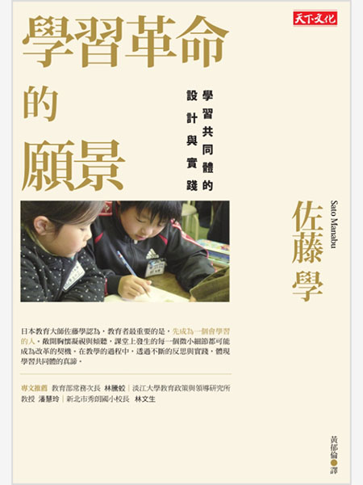
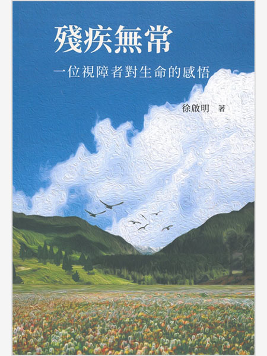

優質教育
確保有教無類、公平以及高品質的教育，及提倡終身學習
「流浪狗和特殊兒童很像，都很有潛力，只是我們很少給予機會」特教班裡的新希望！心靈輔導犬教會自閉症孩子的事
詳全文
合適的工作及經濟成長
促進包容且永續的經濟成長，讓每個人都有一份好工作
我不是懶，只是拒絕過勞……從中國到南韓、日本、台灣，4組數據看懂為何年輕人選擇「躺平」
詳全文減少不平等
減少國內及國家間的不平等
五星級營地背後，暗藏你不知道的「玩法賣地」......被掠奪的「原保地」！原住民土地正義實踐困境
詳全文優質教育
確保有教無類、公平以及高品質的教育，及提倡終身學習
另類事實：關於知識和它的敵人
丟掉課本之後，學習才真正開始：啟動學習的9大關鍵字
從學校殺手到幕後推手
雜訊：人類判斷的缺陷
都是溫柔的孩子：奈良少年監獄「詩與繪本」教室
教育，我相信你
瑪莉詠的遺書
拒學，不要搶救：第一本讓繭居族願意走出家門的實用SOP！從拒學到正常工作，90%都能恢復。
最高學以致用法：讓學習發揮最大成果的輸出大全
學習革命的願景：學習共同體的設計與實踐
50歲的學習法
學校最該教什麼？直擊12種非典型教育現場
經濟成長
促進包容且永續的經濟成長，讓每個人都有一份好工作
失控企業下的白老鼠：勞工如何落入血汗低薪的陷阱？
共享經濟如何讓人變幸福？：利他‧分享‧在地化，我們已進入第四消費時代
區塊鏈：不可不知的金融大未來
流動生活：實現二地居住、自創工作的新可能
全島總罷工：殖民地臺灣工運史
萬物的價值：經濟體系的革命時代，重新定義市場、價值、生產者與獲利者
不工作的世界：AI時代戰勝失業與不平等的新經濟解方
除了資本主義，我們有更好的方法解決當前的經濟危機嗎？：我們可以從史密斯、馬克思和凱因斯學到什麼？
技術陷阱：從工業革命到AI時代，技術創新下的資本、勞動力與權力
從AI到AI+：臺灣零售、醫療、基礎建設、金融、製造、農牧、運動產業第一線的數位轉型
當ADHD患者踏入職場：無法專注的魚腦時代，如何與工作和平共處？
大數據資本主義：金融資本主義退位，重新定義市場、企業、金錢、銀行、工作與社會正義
促進平等
減少國內及國家間的不平等
低端中國：黨、土地、農民工，與中國即將到來的經濟危機

像我一樣黑：一位化身黑人的白人作家，揭露種族偏見的勇敢之旅
殘疾無常：一位視障者對生命的感悟
消逝的韓光：低薪、過勞、霸凌，揭發華麗韓劇幕後的血汗與悲鳴
當彩虹昇起：LGBTQ平權運動紀實
一位原住民心理師的心底事
數字公民：如何打造你的識數世界觀，輕鬆成為現代公民！
下一座世界工廠：黑土變黃金，未來全球經濟引擎與商戰必爭之地——非洲%都能恢復。
與難民同行：港人與難民的故事
鹽淚：巴特羅醫生眼裡的難民血淚
請帶我穿越這片海洋：記敘利亞、伊拉克、阿富汗、北非難民，以及跨地中海的悲劇航程
鋼鐵德國：難民潮下的危機與轉機